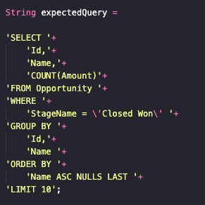
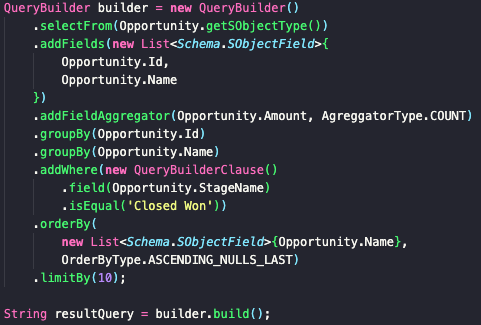

SOQL QueryBuilder API Documentation
Check the project source files in the link below
Github: SOQL QueryBuilder API
Check the project source files in the link below
Github: SOQL QueryBuilder API
| Show: global public webService | |
HomeQueryBuilder APIThis is a collection of helper classes that allows developers to create dynamic SOQL queries. Here's a sneak peakThe Querybuilder API makes an Apex dynamic SOQL that looks like this: Into somthing like this: Some key benefits
A lot more to improveThis first version of QueryBuilder API comes with experimental features and some unstable behaviors, but fixes and more features are coming in the near future. Project timeline
| |